1 · Sacred (charcoal letters, gold bindu) — canonical primary mark on ivory

Five SVG variants of the primary wordmark. The under-dot beneath the R is drawn as a separate <circle> — it is the brand signature, not a Unicode combining mark.

